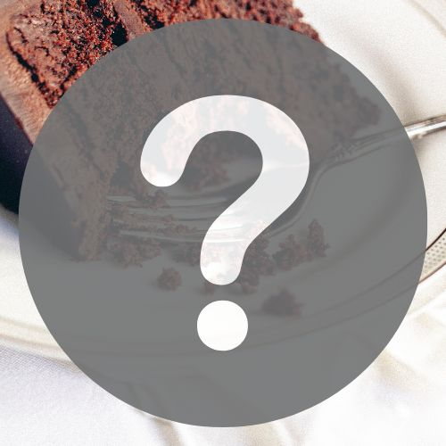

Mystery Sweet

Description
A recipe I found screenshotted on my phone with no title.
I've never made it, so don't know what it is, but it's vegan!
Ingredients
- 230g smooth peanut butter
- 200ml maple syrup
- 100g coconut flour
- 100g dark chocolate
- 2tbsp coconut oil
- Flaky salt
Steps
- In a bowl, combine the peanut butter and maple syrup.
- Add the coconut flour. Mix until fully combined.
- Transfer the batter into a small dish lined with baking paper. Refrigerate for 10 minutes.
- Melt the dakr chocolate and coconut oil together.
- Pour melted chocolate on top of the peanut butter layer and spread evenly.
- Refrigerate until hardened (20-30 mins).
- Cut into slices and sprinkle flaky salt on top. Store in the fridge.
Back to Homepage